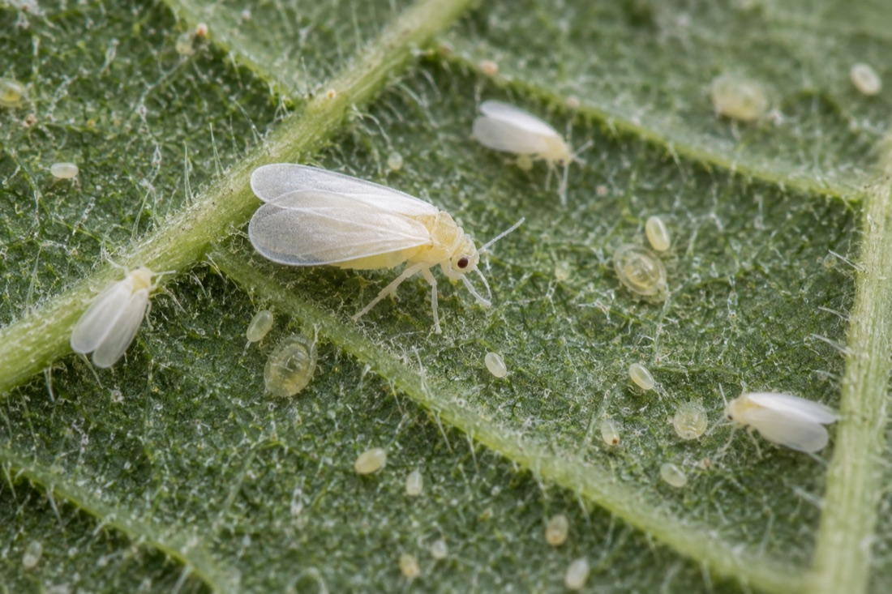
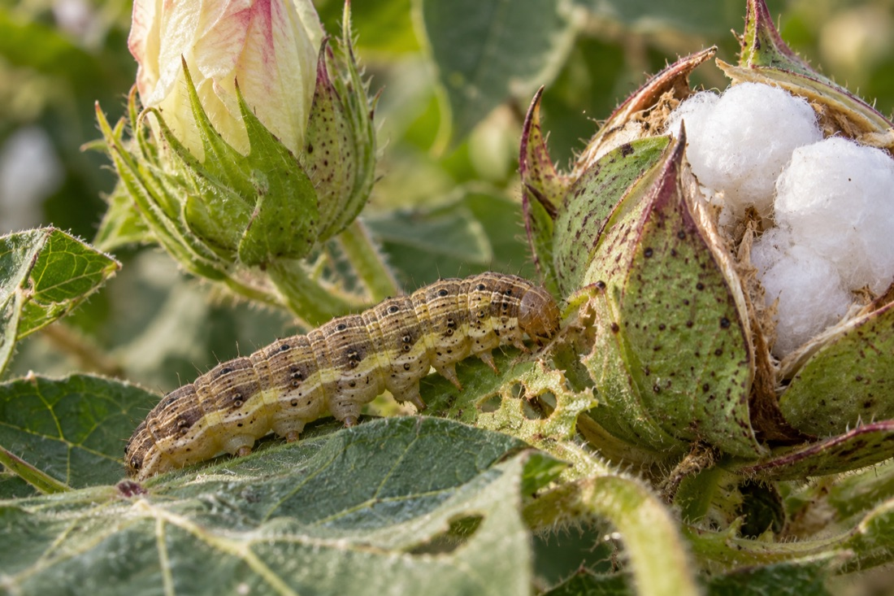
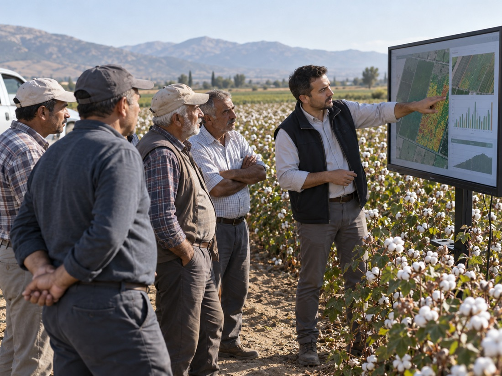

● Yüksek risk · GAP
Beyaz sinek
Bemisia tabaci
Yaprak altında koloni kurar, bal özsuyu bırakır. Haziran sonundan itibaren hızla artar.
Bu hafta0
4 haftada0
Çift yönlü tarım verisi platformu
Çiftçi tarlasını ve her işlemini kaydeder, 1 kg ürünün kendisine kaça mal olduğunu anında görür. Aynı kayıtlar, izinli ve anonim olarak, tarım firmalarına anketlerin hiçbir zaman ulaşamadığı sahadan gerçek içgörüye dönüşür.
Bir kayıt, iki yön
Çiftçi tarlasını haritada çizer: konum, gerçek dekar, ürün ve tahmini verim. Firmaların hiçbir anketle ulaşamadığı ilk gerçek veri budur.
Harran'da bu hafta 41 yeni ilaçlama kaydı. İlk uygulamada Flonicamid payı 3 puan arttı.
Firmalar için: fiyat hassasiyeti en yüksek segment 1.500 TL/da altında.
Ürün ekibi için: erken uygulama kampanyası Haziran'ın ilk haftasına.
Çiftçi tarafı · sezon simülatörü
Nisan'daki sürümden Eylül'deki hasada kadar her işlem kilo maliyetine eklenir. Zaman çizgisini kaydırın ya da oynatın: bitki büyür, zararlı gelir, ilaçlama yapılır, maliyet canlı hesaplanır.
Yapay zekâ notu
Firma tarafı · Bölge Nabzı
İlaç, tohum ve gübre firmaları için il, ürün ve zararlı kırılımında canlı panel. Veriler toplu ve anonimdir; 10 tarlanın altındaki hiçbir kırılım gösterilmez. Haritadaki bir ile dokunun ya da bölge seçin.
Sahadan gelen sinyal
Çiftçi ilaçlama kaydederken zararlıyı da seçer. Böylece her ilaçlama aynı zamanda bir saha gözlemi olur: hangi zararlı, hangi bölgede, hangi hafta ve kaç tarlada.

Bemisia tabaci
Yaprak altında koloni kurar, bal özsuyu bırakır. Haziran sonundan itibaren hızla artar.

Helicoverpa armigera
Tarak, çiçek ve kozayı deler. Temmuz ortası ikinci döl dönemi kritik.

Aphis gossypii
Genç sürgün ve yaprak altında toplanır, virüs taşır. Serin ve nemli haftalarda artar.

Tetranychus urticae
Sıcak ve kuru dönemde yaprak altında ağ örer, yaprakta bronzlaşma yapar.
Neden gerçek veri
Klasik pazar araştırmasında 1.000 kişilik örneklem illere ve ilçelere bölündükçe incelir. Sonunda bir ilçede yirmi kişinin hatırladığı, yüz binlerce çiftçinin davranışı gibi raporlanır. Kaydırdıkça izleyin.
| Kriter | Klasik anket | Tarla Nabzı |
|---|---|---|
| Veri türü | Beyan: çiftçinin hatırladığı kadarı | Kayıt: işlem günü girilen ilaç, doz, tohum ve maliyet |
| Konum | İl ve ilçe | Parsel koordinatı ve gerçek dekar |
| Zaman | Yılda bir, tek seferlik | Ekimden hasada kesintisiz, haftalık |
| Sonuç bağlantısı | Verimle ilişki kurulamaz | Her uygulama hasat verimi ve kilo maliyetiyle eşleşir |
| Erişim | Rastgele katılımcı | İzin vermiş, gerçekten o ürünü eken çiftçi |
Firmalara hizmetler
Tohum, ilaç ve gübre firmalarının pazarlama, ürün ve satış ekipleri için dört çalışma biçimi.
Rapor
İl ve ilçe kırılımında zararlı ve hastalık görülme oranları, uygulama zamanlaması, etken madde payları. Her ay.
Çıktı: PDF + panel erişimiAnaliz
Ürününüz hangi bölgede, hangi dozda, hangi zararlıya karşı kullanılıyor; tekrar uygulama oranı ve hasat verimiyle birlikte.
Çıktı: sezon sonu analizİletişim
Rastgele toplu SMS yerine, izin vermiş ve gerçekten o ürünü eken, o sorunu yaşayan çiftçi segmentine mesaj. Kişisel veri firmaya geçmez.
Çıktı: segment + kampanya sonucuDanışmanlık
Yeni ürün konumlandırması, bayi kanalı, saha günleri ve dijital iletişim için sahadan gelen veriye dayalı öneriler.
Çıktı: proje bazlı çalışmaBu bilgiyi yıllarca anket firmalarından satın alan taraftaydık. Firmaların hangi soruya cevap aradığını biliyoruz; Tarla Nabzı o soruların cevabını sahadan, her hafta getirmek için kuruldu.
Kurucu ekip · sektörde firma tarafından gelen deneyimÇiftçiye ulaşım
Kayıt çiftçi için ücretsiz ve bir dakikalık. Ulaşım, çiftçinin zaten uğradığı yerlerden kurulur.
Kısa bir metin ve tek bağlantı. Merak eden çiftçi tıklar, kendi tarlasının kilo maliyetini görmek için kaydolur.

Zirai ilaç ve tohum bayilerinin camına A4 afiş. Çiftçi QR'ı okutur, kaydı bayide tamamlar; bayi de bölgesinin özet raporunu alır.

Tarım fuarlarında ve firma saha günlerinde yerinde kayıt masası: çiftçi kaydolurken ilk kilo maliyetini ekranda görür.
KVKK ve güven
Kayıt açık rıza ile başlar. Firmalar tek bir çiftçinin adını, telefonunu ya da tarlasını görmez. Verinin yolculuğu:
Başlayalım
Çiftçiler için · ücretsiz
Firmalar için